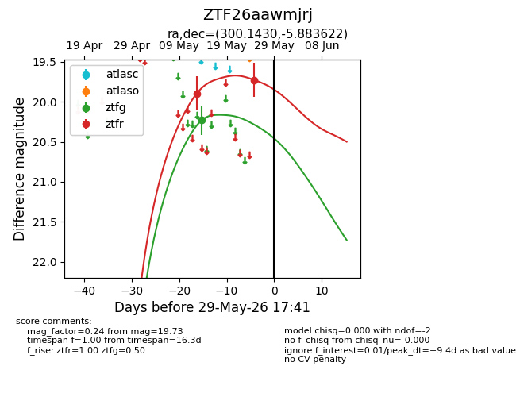
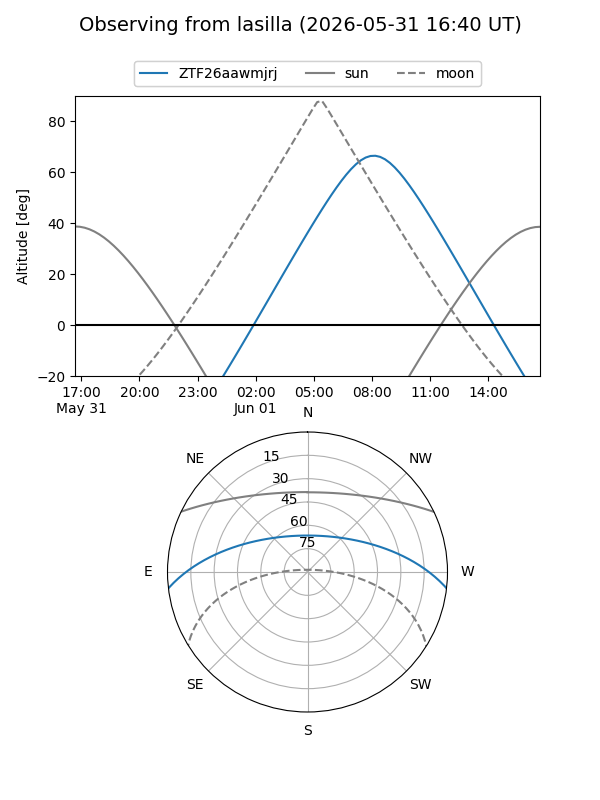
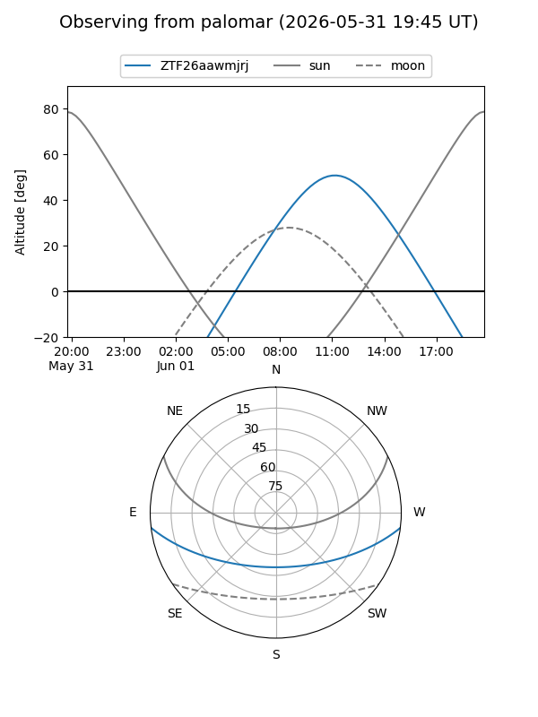
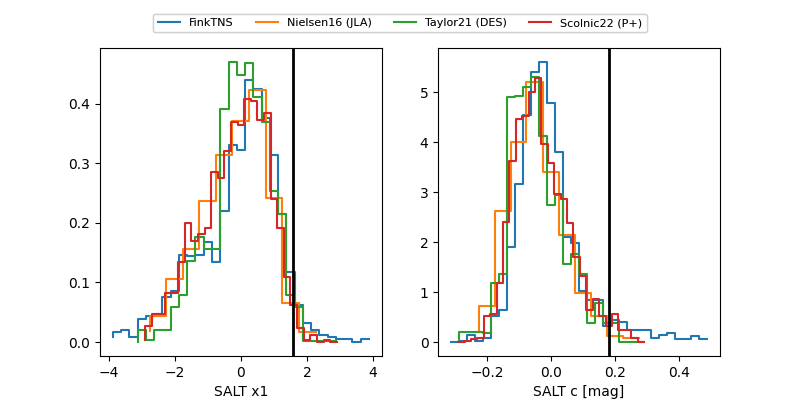

ZTF26aawmjrj
Target ZTF26aawmjrj at 2026-05-29 17:42
Aliases and brokers:
lsst-FINK: link
lsst-Lasair: link
lsst-ALeRCE: link
ztf-FINK: link
ztf-Lasair: link
ztf-ALeRCE: link
alt names
ZTF26aawmjrj (ztf,fink_ztf)
Coordinates:
equatorial (ra, dec) = 300.1430,-5.88362
equatorial (HMS+DMS) = 20:00:34.32,-05:53:01.04
galactic (l, b) = (35.5558,-18.04507)
Flags:
Photometry:
last ztfg=20.23, ztfr=19.73
1 ztfg, 2 ztfr detections
Lightcurve

Visibility


Additional plots
